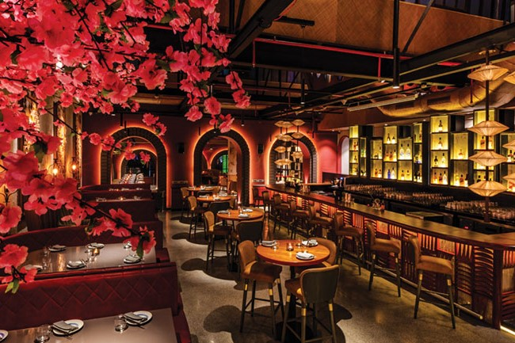

The luxury ski resort has been home to celebrities, grand events and parties since 1985. The location is the best you can imagine, on the spectacular mountain Okina Yama where the sun always shines and the crispy slopes are ready for you and your skis. Including the classic Japanese alpine skiing, Nobuyuki Matsuhisa's award-winning restaurant and the magnificent champagne bar. For recreation, there is Yuki No Machi Spa & Fitness with hot saunas, cooling dips and our well known gym. We offer everything to make your stay as magical as possible.

THE RESTAURANT
Welcome to our restaurant Matsuri owned by the famous Nobuyuki Matsuhisa, a Japanese luxury restaurant that combines traditional and modern cuisine to offer a unique and unforgettable dining experience.
When you enter Matsuri, you are greeted by a calm and elegant atmosphere, with soft lighting and traditional Japanese decor that transports you to another world. The restaurant's skilled chefs prepare each dish with precision and care, using only the finest and freshest ingredients to create culinary masterpieces that are as beautiful as they are delicious.
Matsuri is not just a restaurant, it is a culinary journey that takes you on a sensory adventure through the flavors and traditions of Japan. Come and experience the luxury and elegance of Matsuri, and let us take you on a gastronomic journey you won't soon forget.
John Doe
“The best hotel I've stayed in, absolutely fantastic! The staff were outstanding and the whole hotel is an experience in itself, wow!”
Jane Doe
“Top service and the Spa-area is worth a visit. Fantastic villa, comfortable beds and fantastic skiing, what more could you ask for”
John Snow
“A total experience with service at the highest level. Tastefully decorated, excellent restaurant and the best location close to the slopes.”
Sansa Stark
“Perfect food and drinks with a view of the mountain. The rooms are fantastic and the environment throughout the hotel. The staff is outstanding, you always feel very welcome.”